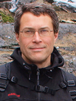
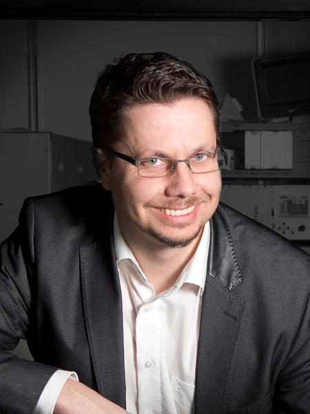
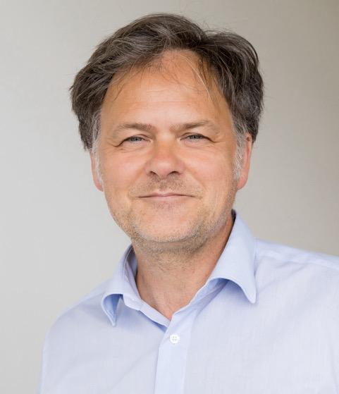
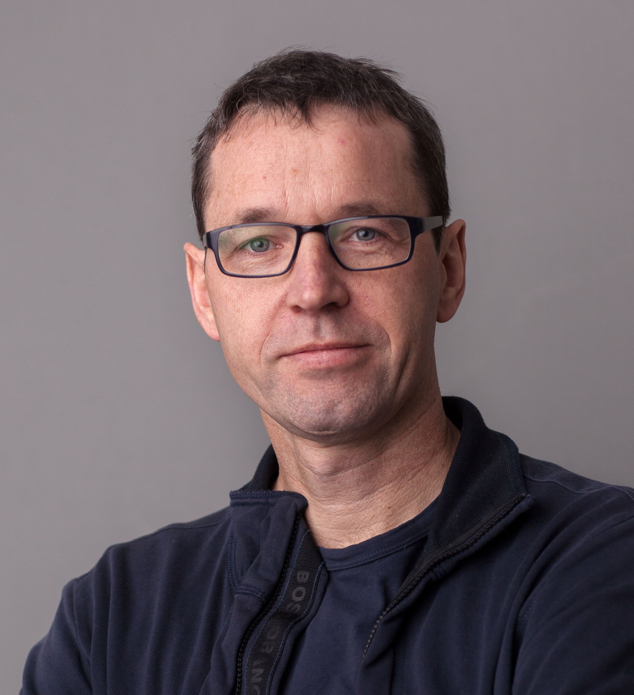
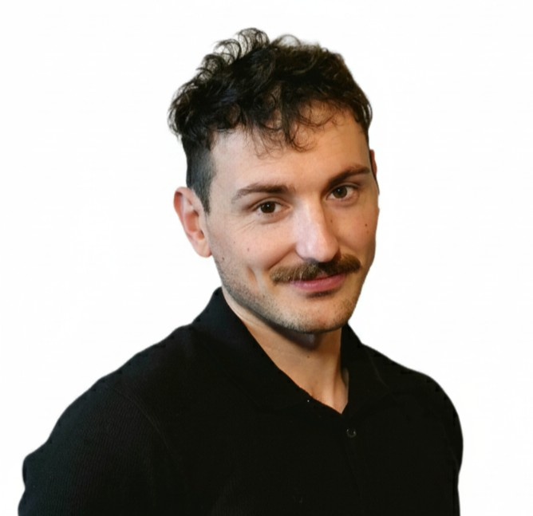
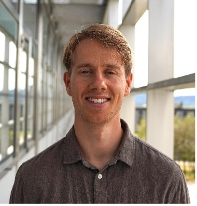
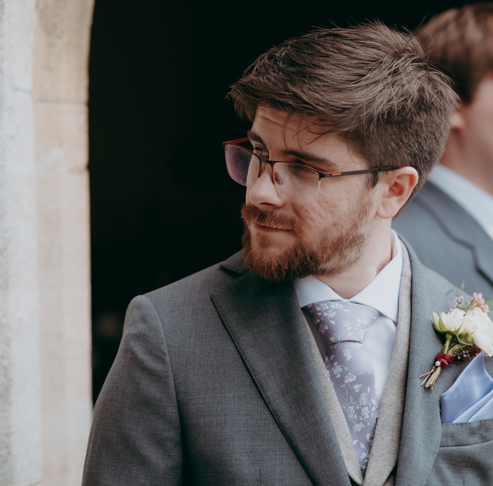
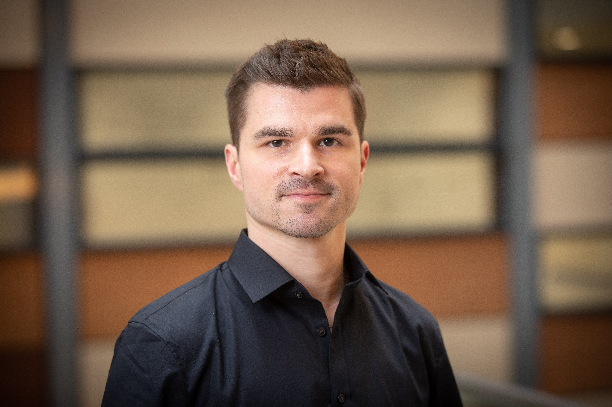

CombaT7
Uncovering bacteria’s secret weapons
An ERC-funded consortium decoding the type VII secretion system — the molecular machinery behind mycobacterial infection and microbial warfare.
Uncovering bacteria’s secret weapons
An ERC-funded consortium decoding the type VII secretion system — the molecular machinery behind mycobacterial infection and microbial warfare.
For years, scientists thought specialised secretion systems were exclusive to Gram-negative bacteria. But Gram-positive bacteria — including harmful pathogens like Mycobacterium tuberculosis — have a powerful exception: the type VII secretion system (T7SS).
This complex machinery does not just export proteins involved in infection; it also plays a surprising role in microbial warfare between bacteria. The ERC-funded CombaT7 project brings together top researchers to decode the mysteries of T7SS in important mycobacterial pathogens like M. tuberculosis and M. abscessus. Using cutting-edge tools like cryo-EM and lung-on-a-chip models, the team will map the system’s structure, identify new protein targets, and uncover how it influences both disease and bacterial competition — laying the groundwork for new ways to fight infection.
Uniting leading experts in microbiology, structural biology, cell biology, and biophysics to spearhead research on T7SSs and their roles in both interbacterial and host–pathogen interactions.
Map the full trans-envelope T7SS by atomic force microscopy and cryo-electron microscopy.
Study the mechanism of secretion by trapping translocation intermediates in the act.
Discover new T7SS substrates through extensive proteomics and bioinformatics analysis.
Visualise T7SS in bacterial warfare and host–pathogen interactions using microfluidics, lung-on-a-chip models and time-lapse microscopy.

Single-cell microbiology, host–pathogen dynamics and time-lapse imaging.
Visit lab →
Atomic force microscopy and nanoscale bioimaging of the cell envelope.
Visit lab →Bacterial protein secretion and the molecular biology of the T7SS.
Visit lab →
+Cryo-EM structural analysis of bacterial secretion machines.
Visit lab →
+Mycobacterial pathogenesis and the genetics of ESX secretion systems.
Visit lab →Assembly and substrate recognition of mycobacterial T7SSs.
Visit lab →Select a researcher to read about their role in the project.

Research interests: Human tissue models, microfabrication, microfluidics, timelapse microscopy, host–pathogen interactions.
To fully understand the T7SS's role in both bacterial warfare and host–pathogen interactions, we require dynamic and controlled models. Microfluidic systems are essential as they allow for precise visualization of bacteria–bacteria antagonism and, when integrated with platforms like the lung-on-a-chip, enable the study of complex host–bacteria interactions in an in vivo-like context. My efforts are concentrated on developing and utilizing these microfluidic models to observe and quantify the T7SS mechanisms in action.

Research interests: Interbacterial antagonism, bacterial secretion systems, mycobacterial pathogenesis, timelapse microscopy.
My work focuses on the mechanistic characterization of ESX-4–mediated interbacterial antagonism in mycobacteria and on identifying predator–prey interaction dynamics at single-cell level. Central to this effort is timelapse imaging at single-cell resolution, supported by machine-learning–based image analysis. This enables us to resolve the mode of action, sequence of events, and dynamic outcomes of ESX-4-driven cell–cell antagonism. To achieve this, we incorporate custom-made microfluidic and lung-on-chip platforms providing controlled environments and physiologically relevant contexts for these single-cell mechanistic studies.

As a crucial resident immune cell in the alveolus of the lung, macrophages represent the first line of defense against tuberculosis. During infection, however, the lung pathogen TB can infect, hijack and kill macrophages in a complex interplay between secreted proteins of the T7 secretion system, host receptors, and intracellular factors. As part of CombaT7 I am investigating this interplay and the mechanisms that drive the killing of macrophages and the dissemination of mycobacteria in the lung.

+
+Research interests: Mycobacteria, cell envelope, membrane proteins, protein secretion systems, microbial pathogens.
My research focuses on the mechanics of substrate translocation within the mycobacterial Type VII secretion system. Specifically, I utilize molecular and biochemical techniques to investigate the fundamental processes of substrate recognition and the pathways of transport across the inner membrane. This work is critical for understanding how mycobacteria survive and cause infection, ultimately aiding the development of targeted therapeutics.